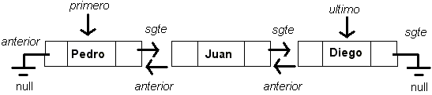

LISTA SIMPLEMENTE ENLAZADA
Una lista simplemente enlazada es una de las estructuras de datos fundamentales. Consiste en una secuencia de nodos, que están conectados
entre sí a partir de punteros o referencias que van hacia una misma y única dirección.
En una lista simplemente enlazada, cada uno de los
nodos contiene como atributos un objeto almacenado y un puntero al siguiente nodo.

Como particularidad, al primer nodo de una lista simplemente enlazada lo llamamos cabeza, mientras que al último nodo lo llamamos cola, y este último
nodo es muy fácil de identificar, ya que su atributo puntero al siguiente nodo es nulo.
LISTA DOBLEMENTE ENLAZADA
Una lista doblemente enlazada es una estructura de datos que consiste en un conjunto de nodos enlazados secuencialmente.
En una lista doblemente enlazada, cada uno de los
nodos contiene como atributos un objeto almacenado y dos punteros hacia el anterior y al siguiente nodo.

Al igual que en la lista simplemente enlazada, al primer nodo de una lista doblemente enlazada lo llamamos cabeza, el cual su puntero al anterior nodo apunta a nulo, mientras que al último nodo lo llamamos cola, y en este último
nodo, su atributo puntero al siguiente nodo es nulo.
LISTA CIRCULAR SIMPLEMENTE ENLAZADA
Una lista circular simplemente enlazada, se basa en el concepto de la lista simplemente enlazada, de hecho, funciona de la misma manera, a diferencia de que
ahora el puntero al nodo siguiente de la cola no será nulo, sino que esta apuntará a la cabeza, lo cual ocasiona que desde la cola podamos pasar directamente a la cabeza,
creando así una especie de ciclo que se romperá cuando una condición dada se cumpla (Por ejemplo, encontrar un objeto, etc.)

LISTA CIRCULAR DOBLEMENTE ENLAZADA
Similar a la anterior estructura, en una lista circular doblemente enlazada, la cola también apunta a la cabeza de la lista, a diferencia de que toda la lista va a tener enlaces
dobles, permitiéndonos de este modo comenzar el recorrido en el nodo que deseemos hacia la dirección que deseemos.

Otra particularidad de esta lista es que el puntero izquierdo de la cabeza ya no será nulo, sino que apuntará a la cola.
PILA (STACK)
DESCRIPCIÓN
COLA
DESCRIPCIÓN